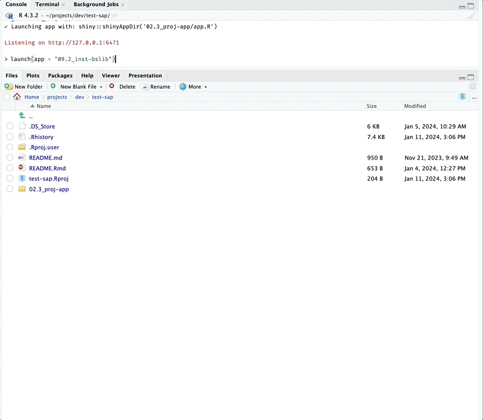

shinyap assumes you have GitHub and Posit
workbench synced. Read more about setting this up on the gert
package website
“In
gert, authentication is done automatically using thecredentialspackage. This package calls out to the local OS credential store which is also used by the git command line. Therefore gert will automatically pick up on https credentials that are safely stored in your OS keychain.”
List all apps
The apps are stored in branches on the moviesApp
repo:
list_apps()
#> source branch_name updated
#> 1 <NA> main 2023-10-25 15:12:48
#> 2 origin 01_whole-app-game 2023-11-21 18:53:52
#> 3 origin 02a_movies-app 2023-11-19 22:23:38
#> 4 origin 02b_proj-app 2023-11-17 22:50:17
#> 5 origin 03a_description 2023-11-02 20:35:02
#> 6 origin 03b_rproj 2023-11-02 20:35:17
#> 7 origin 03c_create-package 2023-11-02 20:35:34
#> 8 origin 04_devtools 2023-11-02 20:35:52
#> 9 origin 05_roxygen2 2023-11-17 22:53:36
#> 10 origin 06a_pkg-exports 2023-11-17 22:54:17
#> 11 origin 06b_pkg-imports 2023-11-17 22:54:52
#> 12 origin 07_data 2023-11-17 22:55:45
#> 13 origin 08_launch-app 2023-11-17 22:56:49
#> 14 origin 09a_inst-www 2023-11-17 22:57:48
#> 15 origin 09b_inst-bslib 2023-11-21 17:14:32
#> 16 origin 09c_inst-dev 2023-11-17 22:59:04
#> 17 origin 09d_inst-prod 2023-11-18 12:51:27
#> 18 origin 11_tests-specs 2023-11-18 13:30:29
#> 19 origin 12a_tests-fixtures 2023-11-18 13:31:06
#> 20 origin 12b_tests-helpers 2023-11-18 13:31:53
#> 21 origin 12f_tests-mocks 2023-11-18 13:34:25
#> 22 origin 12g_tests-snapshots 2023-11-18 13:35:09
#> 23 origin 13_tests-modules 2023-11-18 13:32:44
#> 24 origin 14_tests-system 2023-11-21 17:08:21
#> 25 origin 15_golem 2023-11-18 13:36:02
#> 26 origin 16_leprechaun 2023-11-10 20:35:13
#> 27 origin 17_rhino 2023-11-06 22:55:08
#> 28 origin 18a_debugging 2023-11-18 13:39:47
#> 29 origin 18b_debugging 2023-11-18 13:40:34
#> 30 origin 18c_debugging 2023-11-18 13:41:07
#> 31 origin 18d_debugging 2023-11-18 13:41:46
#> 32 origin 18e_debugging 2023-11-18 13:42:23
#> 33 origin 19a_reactive-values 2023-11-18 13:44:24
#> 34 origin 19b_user-data 2023-11-18 15:06:19
#> 35 origin 20_tests-snapshots 2023-11-18 13:35:09
#> 36 origin 21_tests-mocks 2023-11-18 13:34:25
#> 37 origin 22a_trace-matrix 2023-11-18 15:26:20
#> 38 origin HEAD 2023-10-25 15:12:48
#> 39 origin main 2023-10-25 15:12:48You can also specify a regex to return a vector of
branches matching a particular chapter or topic:
list_apps("11")
#> [1] "11_tests-specs"
list_apps("tests")
#> [1] "11_tests-specs" "12a_tests-fixtures" "12b_tests-helpers"
#> [4] "12f_tests-mocks" "12g_tests-snapshots" "13_tests-modules"
#> [7] "14_tests-system" "20_tests-snapshots" "21_tests-mocks"Launch
To launch an app from the Shiny App-Packages book, you can simply supply the name of the branch:
launch_app(app = "<branch>")Let’s start with one of the branches from the early chapters (not quite an app-package yet):
launch_app(app = "02b_proj-app")
launch_app() will automatically download the application
files into a folder in the current working directory. If the branch is
storing an app-package, launch_app() loads the package and
then launches the application:
launch_app(app = "09b_inst-bslib")
Helper
The check_r_pkg() function is useful for determining if
a directory contains an R package:
check_r_pkg("02b_proj-app")#> [1] FALSEIf verbose is set to TRUE, details are
provided on what is being checked:
check_r_pkg("09b_inst-bslib", verbose = TRUE)#> ℹ Checking DESCRIPTION for package fields
#> ✔ Package, Version, License, Description, Title, Author, and Maintainer found!
#> ℹ Checking .Rroj for project build fields
#> ✔ BuildType, PackageUseDevtools, and PackageInstallArgs in .Rproj!
#> ✔ '09b_inst-bslib/' is an R package
#> [1] TRUEGet
launch_app() calls the get_app() function,
which will only download the specified branch into the current working
directory.
get_app(app = "14_tests-system")
Get and open
You can open the new app project by supplying the
open = TRUE argument:
get_app(app = "14_tests-system", open = TRUE)
If the app is already downloaded, the files are updated with the latest commit to the branch.